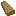
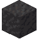

Storage
Storage
Your own inventory only holds so much, so there are many ways to keep items safe and organized, such as Chests and Crates, Tool Racks, Shelves, and Baskets.
Keep in mind that an item's Size ⇲ limits which containers it will fit inside.


A Chest is the most basic storage block, crafted from a single type of Lumber.
Chests
A Chest has 18 slots.
Chests hold items up to Large in size. Very Large items, such as Logs, are too big to fit and must be stored another way.


A Trapped Chest stores items just like a normal chest, but emits a Redstone signal while it is open.


A Crate stores a single type of item, but up to 36 stacks of it, in sizes up to Large.
Crates
To insert items, use ПКМ on the crate while holding them. With an empty hand, ПКМ takes out a single stack, and if Shift is held, it empties the whole crate at once.
A Tool Rack is mounted on the side of a solid block. Place or take a tool with ПКМ. Only items that can be used as tools may be placed on it.


2
Shelves can be attached to solid walls. Items, including jars, can be placed on top of them by using the item on the shelf or underneath.
Збереження
For storing food and slowing decay, nothing use a Vessel. See their chapters for details:



Baskets can hold 64 items inside them. Insert and extract by placing the item on the basket with ПКМ. Larger items take up more space.